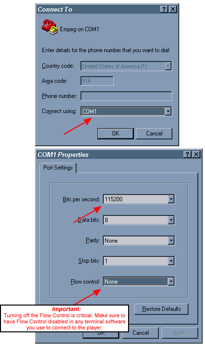

| |

rio car dot org FAQ (Frequently Asked Questions)
Category: Main -> Upgrade, customization, and third-party software questions
| Answer | | · How do I upgrade my player's hard disk? Here is a complete disk upgrade guide for for your enjoyment. Back to Top
| · How are the songs stored on a two-drive player?
(Entry last updated on February 13th, 2005)If a player has two disk drives, newly-added songs will be stored on the disk drive with the most available disk space, as measured in free blocks.
For example, if your first disk drive has 1 gigabyte free, and you add a second blank disk drive to your player, then all new music you add to the player will go on to the second drive until you've filled it up to the point where there is only 1 gigabyte left on the second drive.
After both drives have the same amount of free space, it will tend to alternate between storing the files on the first drive and the second drive.
There is currently no way to tell which files are stored on which drive without fishing through the FIDs by hand at the shell prompt. Plans to implement a feature for this in the software have been cancelled. The player software currently does not care nor report whether a given song is on /drive0 or /drive1, and will search both drives for files when retrieving songs. Also note that a given database file (*1) might be on a different drive than its corresponding song file (*0).
For more information on how the files are stored on the player, see Roger's guide here. Back to Top
| · Can I make my own visuals for the player?
(Entry last updated on April 2nd, 2005)Yes and no.
The source code for the Prolux real-time visuals is closed-source. There's currently no way to create your own full visuals, there is no plug-in interface for doing it in the player software.
However, some of the existing visuals can have their graphics modified. At the time of this writing, you could do the following:
- You can add a custom logo that appears on the screen during the player's boot-up process. This is done with the Logo Editor (instructions here) or with jEmplode. Examples of custom boot up logos can be found here.
- You can replace the animated company logo which appears before the custom logo when the player boots. This is done with jEmplode, and requires the latest version of the Hijack kernel. Complete instructions here. Examples of custom boot up animations can be found here.
- You can replace the backdrop to the Anna Vu visual. This is done either with the Logo Editor or the EmRAWerter utility. If using EmRAWerter, the file must be uploaded to the player using one of these methods. The file to be edited is /empeg/lib/visuals/vuback.raw, and it must not be RLE-compressed. Examples of modified Anna Vu backdrops can be found here.
- You can replace the graphic used as the basis for the Tux Much, Tux Too Much, and Tubular visuals. This is done either with the Logo Editor or the EmRAWerter utility. If using EmRAWerter, the file must be uploaded to the player using one of these methods. The file to be edited is /empeg/lib/visuals/logo.raw, and it must not be RLE-compressed. Examples of modified Tux images can be found here.
- The graphic used for the "Logo" visual, although it is similar to the Tux Much graphic, is not the same file. The Logo visual is not changed when you edit the Tux Much graphic. Instead, this graphic is embedded in the player binary and can only be replaced by hacking that file. Because a mistake with the player binary could render your player temporarily inoperable, attempting to change this file is not recommended. If you're hell-bent on changing the Logo visual, do a search on the Unofficial Empeg BBS to locate a utility that will help you hack a new graphic into the player binary.
- You can replace the graphic used in the Image Pan visual. This is done with the EmRAWerter utility. The file must be RLE compressed, and then uploaded to the player using one of these methods. The file to be edited is /empeg/lib/visuals/escher.raw. Examples of modified Image Pan files can be found here.
- You can create new animated dances for the stick figures in the FlanceDoor visual. This is done with the FlanceEdit utility. The files must be uploaded to the player using one of these methods. The files to be edited are /empeg/lib/visuals/*dance.raw.
- You can edit the player's text fonts. The editing utility for this can be found in the downloads section of this site. The edited font files must be uploaded to the player using one of these methods. The files to be edited can be found in the /empeg/lib/fonts folder.
When editing the graphics on the player, remember that most of them must be reduced to only 128 pixels wide by 32 pixels high, and all of them are made up of only four colors: Black, white, and two shades of gray. Continuous-tone photographic images must be posterized and/or dithered before they will display on the player. Note that the two gray shades are not the same as the two standard shades of gray you find in the Windows default palette. You must create a custom palette and use it exclusively when creating your graphics. The palette values for the four colors are 0 (black), 80 (dark gray), 96 (light gray), and 255 (white).
Back to Top
| · How do I put custom logos or kernels into the player?
(Entry last updated on June 28th, 2007)Use my Empeg Logo Editor, available in the Windows Utilities section of the Downloads Page here at this site. It will import, export, edit, and install custom boot-up logos into the player's flash RAM. It also has a Kernel Flash Utilitity that will install custom kernels into the player's flash RAM. (If you are running Linux/Unix, click here.)
Kernels:
The kernel is the part of the Linux operating system that handles all of the basic input and output. On the car player, the kernel is stored in flash RAM at address 10000. The kernel is a separate component from the player software, and unlike the player software, is open-source. As a result, it's possible to create hacked versions of the kernel and install them into the player's flash RAM.
Kernels must be pre-compiled for the correct version and model of player. For instance, if you are running version 2.0 of the player software, make sure to get a 2.0 kernel. Also make sure that the kernel is compiled properly for a Mk1 player or a Mk2 player, depending on what you own.
A collection of various kernel hacks can be found at the Downloads Page on this site, or check here for the popular "Hijack" kernel. For information on hacking and compiling your own kernels, visit the Developer Info section of this site.
Note: Sending a hacked kernel to the player is not the same thing as an upgrade. An upgrade is a complete replacement of the kernel and the player software together. Hacked kernels only replace the kernel. So it's important to make sure your kernel is compatible with whatever player software you're currenty running.
Note: If your player stops working after installing a custom kernel, the file might have been probably during the download. Try grabbing the file again with a download manager program to make sure it downloaded correctly. Also make sure the file is the correct one for your player.
Custom Logos:
The player can optionally display a custom logo on the screen during boot time. It will display the company logo first, then your custom logo, then it will launch the player software. The custom logo is stored in flash RAM at address A000 on the player.
Logos are 128 pixels wide by 32 pixels high, and are made up of only four colors: Black, white, and two shades of gray. Continuous-tone photographic images must be posterized and/or dithered before they will display on the player. Note that the two gray shades are not the same as the two standard shades of gray you find in the Windows default palette. You must create a custom palette and use it exclusively when making your logo. The palette values for the four colors are 0 (black), 80 (dark gray), 96 (light gray), and 255 (white). Use the Empeg Logo Editor to preview how the gray shades will look on your player.
Visit the Boot Logos section of this site to see examples of custom logos you can put on your player. If you are using Internet Explorer, you can right-click on one of those logos, select "copy" from the menu, and paste it directly into the Empeg Logo Editor.
When you install a custom logo onto the player, it will be displayed briefly after the main company logo appears. The main company logo will be either an empeg logo or a Rio logo, depending on your model of player. With version 2.0 and later of the player software, the Rio/empeg company logos are animated.
You can change which company logo appears whenever you like. For instance, if you are running version 2.0 and want to change your Rio player to show the empeg's "waving Tux" animation, select the "Boot with the empeg personality" menu option in the Empeg Logo Editor software and then either send or delete a logo from the player.Back to Top
| · How do I change the animated company logo?
(Entry last updated on February 18th, 2014)With version 2.0 of the player software, the company logo (the one that appears when the player first boots) is animated. Normally this logo cannot be edited because it is hard-coded into the kernel.
However, the popular Hijack kernel, in coordination with jEmplode, allows you to replace the animated company logo with a custom animated logo. Here is how to do it:
- If, after installing Hijack, a custom boot animation is playing and you simply want to change your player back to the factory bootup animation, use the "Clear Animation" option in jEmplode, following the instructions below to connect to the player over ethernet with Jemplode.
- Make sure your player is connected to your computer via ethernet, and the connection is working properly. If you are having trouble getting ethernet to work, the troubleshooting tips are here.
- Make sure your player is running version 2.0 of the player software. Instructions for upgrading the player software are here.
- Install the latest Hijack kernel onto your player, using the instructions here.
- Get the latest version of jEmplode running your computer. It includes an animation editor (it's in the Plugins menu).
- IMPORTANT: Make sure the player is in AC/HOME mode. By default, the Hijack FTP and HTTP servers only run when the player is in AC/HOME mode. If you are having trouble accessing these features, check to make sure the player isn't in DC/CAR mode.
- If desired, visit the Boot Logos section of this site to see examples of animated logos you can put on your player. Save the ".RAW" or ".GIF" files to your PC and open them in the jEmplode animation editor.
- If you want to use the original factory boot animations in the jEmplode animation editor (either for making modifications, or for changing your player animation back to the factory animation), they are available in the Empeg section of the boot logos.
- Draw or edit your animation frames, either directly into the animation editor in jEmplode, or by using a third-party painting program such as Paint Shop Pro. If you are using a third-party program, make sure it can save individual images as .PNG files or save entire animations as animated .GIF files.
- When drawing the animation, make sure you use the correct size and colors. The size is 128 pixels wide and 32 pixels high. The color palette is only four colors: White, black, and two shades of gray. The shades of gray are not common, and they are not the same shades of gray normally used when color-reducing an image. You must create a custom palette and use it exclusively when making your animation. The palette values for the four colors are 0 (black), 80 (dark gray), 96 (light gray), and 255 (white).
- When drawing the animation, make sure you don't make it too long. The original factory animations were only 27 frames long, with each frame being displayed for 1/12 of a second. If you make it longer than this, any custom logo you have showing after the animation will not stay on the screen long enough. Also, the custom animations have a limit to the number of frames you can display, so that it saves memory. I recommend keeping the animations under 27 frames, or if you have to push it, don't push it past 32 frames.
- If you are using the jEmplode animation editor to assemble your animation frames, you must understand the concept of frame re-use. The left-hand pane edits the actual frames themselves. The right-hand pane edits the order in which the frames are actually played back. For instance, you might have only 13 unique frames (13 individual drawings) in the left-hand pane, but the animation running order in the right hand frame might have 25 total frames, because several of the 13 frames on the left side get re-used over and over again in the actual playback. This is to help save space in the flash RAM.
- After you are satisfied with the animation, you should be able to send it to the player using the menu in the jEmplode animator.
- If you have any trouble sending the animation to the player, check to make sure that the latest Hijack is installed properly, that your ethernet connection is working properly, that the player is in AC/HOME mode so that the FTP/HTTP servers are running, and that you have either removed the passwords from Hijack and the Jemplode configuration screen, or that you have properly set the passwords in both places.
Back to Top
| · What is the file format for the boot logo files?
(Entry last updated on February 6th, 2003)Examples and code can be found here. Back to Top
| · Is it dangerous to put a custom kernel or a custom logo onto the player?
(Entry last updated on July 1st, 2006)For logos, it's not dangerous at all.
For kernels, as long as the kernel was carefully written, there's little danger of anything going wrong.
The worst thing that can happen is that your player will stop working properly because of a bug or because of an incorrect kernel file. But at that point, all you have to do is re-apply one of the factory upgrade files. This will replace all of the kernel and player software, putting it back to original factory specification (without even hurting the music).
Even if the kernel completely trashes your hard disk (highly unlikely, the person writing the kernel would have to be either deliberately malicious or incredibly careless for this to happen), you can always rebuild the hard disk from scratch using the disk builder software, apply an upgrade, then re-load all your music. Back to Top
| · Where can I find source code for writing to the player's flash RAM?
(Entry last updated on August 13th, 2008)Hugo's original source code is here: download.c. This code can be compiled to run under either Win32 or Linux. Note that this simplified code only works on COM1 and has at least a couple known bugs.
The Empeg Logo Editor software for Windows includes an updated Win32 version which lets you choose COM1-COM4 and has the bugs fixed. Details of the bug fixes can be found here and here, and the full source code for the Win32 version can be downloaded from here.
An updated version of the Linux/Unix code was made by Bitt Faulk. This version supports Solaris, Linux, and other Unix operating systems, and its full source code can be found here.
When using this code to flash your player, make sure you know the correct flash memory address on the player. The addresses are a000 (hex) for logo files, and 10000 (hex) for custom kernels. You need to know the difference, because if you put a logo into the kernel memory location or vice-versa, the player won't boot.
Note:This code is only useful for uploading custom kernels (.zimage files) and custom boot logos into the player's flash RAM. This is not for installing full player firmware files (.upgrade files). For installing a full upgrade, you need these instructions. Back to Top
| · What controls the combination of company logos and custom logos at boot up?
(Entry last updated on April 22nd, 2003)The first four bytes of the flash RAM at block a000 control the player's boot up behavior:
"rioc": Rio logo followed by the custom logo
"rio ": Rio logo only (no custom logo)
"empg": empeg logo followed by the custom logo
"emp " or any other value: empeg logo only
Note that in two of those instances, the fourth byte is an ASCII space character (0x20 hex).
Usually, these four bytes are included as part of a logo file before you upload it to the player. My Empeg Logo Editor software handles this for you automatically.
With version 2.0 and later of the player software, the Rio/empeg company logos are animated.
You can change which company logo appears whenever you like. For instance, if you are running version 2.0 and want to change your Rio player to show the empeg's "waving Tux" animation, select the "Boot with the empeg personality" menu option in the Empeg Logo Editor software and then either send or delete a logo from the player.
Note that the custom Hijack kernel changes this behavior slightly. It plays only one animated logo, regardless of whether the player is set for the Rio personality or the empeg personality. If you want to change the Hijack animated logo, see this entry. For example, if the Hijack animation stays on the screen too long to display your custom logo, you can replace it with a shorter animation, or replace it with frames that are the same as your custom logo.Back to Top
| · How do I edit the 'config.ini' file on the player?
(Entry last updated on March 28th, 2003)The config.ini file contains several 'hidden' options that aren't available through the normal settings. These options are mostly useful to developers. For example, there is a config.ini option that will output track information to the player's serial port.
Complete documentation for all config.ini options can be found in the Developer Info section of this site.
You may either edit the config.ini file using Linux shell prompt commands on the player itself, or you may use a hidden option in Emplode version 2.0 or later. To activate this hidden option, exit Emplode and edit your Windows system registry as follows:
HKEY_CURRENT_USER
Software
SONICblue
emplode
2.0
Settings
New DWORD value named allow_edit_config with a value of 1.
Note that this may require that you actually create the 2.0/Settings key. The key does not normally exist. Do not confuse this with the emplode/Settings key:
If you aren't any good at using the registry editor, head over to the Downloads Section. In the Windows Utilities area, there is a ".reg" file that you can run directly and it will put this into the registry for you.
After you have edited the registry, start Emplode and there should be a new menu option for working on config.ini. Remember to synch after making changes, and also make sure to fully reboot the player so that the config.ini can be re-read and your changes can take effect.
Important: Only use this feature for editing options that aren't available through the regular Emplode configuration screens. For instance, do not use this to edit the Favorite Visuals, use the "Favorite Visuals" menu instead.
Note that you can also edit the config.ini with the JEmplode software or with the Emptool "config" command. Do not use Windows Notepad to edit the config.ini file, or else you will cause a problem with carriage returns and linefeeds which are not readable by the Linux software on the player. Click here to read about potential problems editing the config.ini file.
Finally, note that certain problems can arise if your config.ini file gets too large. Some users have reported that the player software malfunctions if the config.ini is full of extra data (such as when this bug bit them). There is also a limit of 1023 bytes per line in config.ini, but under normal use, you probably wouldn't ever run into this limit.Back to Top
| · Can I customize the alternate-row coloring in Emplode?
(Entry last updated on January 27th, 2003)Emplode version 2.0 and later, when in View/Details mode, lists the tracks and playlists in rows of alternate colors. It looks kind of like an accountant's spreadsheet.
One of the two colors is the default window background color as defined in your current Windows color scheme. The other color is Cyan by default, and can be changed by creating/editing the following registry key:
HKEY_CURRENT_USER
Software
SONICblue
emplode
2.0
Settings
New STRING value named Alternate Row Colouring (note the English spelling of Colouring).
The value of the string is HTML-tag-style hexadecimal. For example #FFEEFF is 255 red, 238 green, 255 blue.
Note that this may require that you actually create the 2.0/Settings key. The key does not normally exist. Do not confuse this with the emplode/Settings key. Please click here for more details on which registry key should be edited.
Make sure to exit Emplode before editing the registry. After you have edited the registry, you can start Emplode to see the new colors.Back to Top
| · How do I create a set of 'favorite' visuals?
(Entry last updated on April 1st, 2003)Favorite Visuals is a feature on the Emplode "Tools" menu. Edit the visuals you wish to see in each mode: FM, AM, Aux, and "DSP" (which is the MP3 player). After you're done with the edits, do a synch.
Next, press and hold the Visual button on the Rio remote control. Each time you do this, it should toggle between Favorites mode and All Visuals mode. Note that you must also do this same press-and-hold trick in order for the "auto change visuals" feature to use your favorites.
Note: If, after having used software version 2.0 beta 11, you are having trouble editing the config.ini file, if you are having trouble editing favorite visuals, or if additional entries seem to have been added to your favorites list, you might be running into a known bug. Please click here for details on how to fix the problem. Back to Top
| · How do I use Hyperterminal to connect to the player's shell prompt?
(Entry last updated on July 20th, 2006)
IMPORTANT: In Hijack versions 440 through 460, the serial port will not function as described below unless you modify a Hijack setting.
This only applies to players where you have installed the third-party Hijack kernel, version 440 through 460. If you have installed version 461 or later, this does not apply.
Do a long button press on the wheel to get the Hijack Menu. Select "Serial Port Assignment" -> "Player Uses Serial Port". Reboot immediately. Remember to change it back to "Apps use Serial Port" once you're done with Hyperterminal. This also requires a reboot.
The player's serial port is useful for many things, one of which is ASCII terminal communication with the player. Examples of things you can do are:
- Diagnosing and debugging problems.
- Remote controlling the player with ASCII commands.
- Accessing the Linux shell prompt to run programs or perform disk operations on the player.
Any piece of terminal software will work for this purpose, but Hyperterminal is most commonly used since it comes with Windows. If you can't find Hyperterminal on your Windows Start menu, search for the file "hypertrm.exe" on your hard disk, or search for "Hyperterminal" in the Windows Help. In some versions of Windows, it's an optional component and you may need the original Windows installation CD to install it. If you're not a Windows user, or you can't use Hyperterminal, you may use any other terminal program you like. There are many available for download on the internet, many of them freeware.
The first step is to make sure you've got a working COM (serial) port that you can use for the purpose. You can check the Windows Device Manager to make sure your serial ports are working and there are no conflicts. A genuine serial port is the best choice, as opposed to a USB-to-serial converter plug. Problems have been reported with some brands of USB-to-serial converters.
Depending on your system configuration, you may have a working COM port that shares an IRQ with another device. For instance, on my system, I once had a modem on COM3 and a serial port on COM1. These ports both used the same IRQ, so I couldn't dial the internet and communicate with the player at the same time (although I had no trouble doing those things independently of each other). I later reconfigured the system so that this was no longer a problem.
Also make sure that there aren't any other applications grabbing the COM port. If another program is using the COM port, it will prevent Hyperterminal from working. For instance, one common problem is people who leave their PalmSync program running when they try to run Hyperterminal. Or perhaps you just used Emplode or EmpegUpgrade and forgot to close it before running Hyperterminal.
The next thing you need is the proper cable, a 9-pin "null modem" cable. One was shipped along with the player, so you probably already have it, or they can be purchased at many computer stores or even Radio Shack. The most common problem with serial connections to the empeg is using a straight-through cable instead of a null modem cable. (There was a brief period where incorrect cables were being accidentally shipped to empeg customers, if you were affected, you may have received a replacement cable by now.) If your computer has a 25-pin serial port instead of a 9-pin port, you can get an adapter from most computer stores.
The cable must also be in good condition. I've had serial cables go bad from internal fraying. If this happens, it's hard to tell just by looking at it. The symptoms of a bad cable would be intermittent success at connecting.
Next, run the Hyperterminal program from the Windows Start menu.
Note: If you don't have a modem installed on your computer, Windows might complain, and give you an annoying box which asks you to install a modem. Just close this box without installing a modem, and continue with the rest of the procedure below. It may also force you to enter your dialing area code (Windows just doesn't know when to give up, does it?), just feed it something so it will shut up and let you get on with the direct COM port connection.
Now Hyperterminal will ask you to create a new connection. Name it something like "Empeg on COM1" (or whichever COM port you're using). The next two boxes will give you a chance to change parameters, change them as shown:

Note: The above settings assume you're connecting to the player when it's running on AC power. If you're trying to connect to the player via the in-car serial connector, you must change the "Bits Per Second" value to 4800. When it's running on DC power, the serial port speed is lowered to 4800 for better compatibility with other in-car hardware devices.
Alternatively, you can change this value on the player itself, allowing faster communication with Hyperterminal when sled-docked. The change is made by adding the following entry to the player's config.ini file:
[serial]
car_rate=115200
Also, according to Hugo, Mark 2 units with serial numbers below 1050 are be missing a ground wire on the in-car serial connector. To get them to work, you need to connect a ground wire between your laptop's serial cable shroud and a ground point on the vehicle.
Another thing to remember is that the serial port on the docking sled is already "crossed over" with the RX and TX pins swapped. So you need to use a straight-through serial cable instead of the supplied null-modem cable if you're connecting your PC to the docking sled's serial connector.
You have just created a Hyperterminal "profile", and you can now save the profile as an ".ht" file on the hard disk. Double-clicking on the .ht file will connect you directly to the player.
At this point, you can cycle the power on the player and you should see text begin to scroll down the screen. It should look something like this:
empeg-car v0.04 19990121 (altman@empeg.com)
If there is anyone present who wants to upgrade the flash, let them speak now, or forever hold their peace...it seems not. Let fly the Penguins of Linux!
Copying kernel...
Calling linux kernel...
Uncompressing Linux....................... done, booting the kernel.
(Etc...)
If your player is working properly, you can control it at this point by typing commands such as N (Enter) for the next track. A full list of commands can be found in the Developer Info section of this site.
Note: On some systems, Hyperterminal won't communicate with the player properly unless you reboot the player after starting Hyperterminal. If your keyboard commands don't seem to work, unplug the power from the player then plug it in again. Look to make sure you can see the bootup messages scrolling by as the player boots.
If you have installed the special developer version of the player software, pressing Q (Enter) will quit out of the player software and drop you to the Linux shell prompt to fool around. If Q (Enter) doesn't work, then try Ctrl-C or Ctrl-Break.
At this point, if you just have the consumer software installed, you'll get:
Switching to shell-player loop
Starting bash.
no shell!
Shell exit
... and the player will start playing where it left off.
So, if you want to do things at the shell prompt, the consumer software isn't enough. You need to install the developer software before you can get to the shell prompt. Instructions on how to obtain and install the developer software are here.
After you install the developer software, then when you press Q (Enter), you will see something like this:
empeg:/empeg/bin#_
With a blinking cursor. That's the shell prompt.
Warning: Don't fool around at the Linux shell prompt unless you know what you're doing. You could render the player inoperable if you alter certain files. Hopefully you're reading this because you already know what you want to do at the shell prompt (for instance, you've been directed here by other FAQ entries), or you are a Linux expert already and you know what to do. If you need a command reference, see the next FAQ entry for links to some Linux help documents.
Some things don't require shell access, and can be diagnosed simply by reading the text that's output by the player on bootup. If you have a large problem and the errors scroll past too quickly, you can increase the size of the Hyperterminal scrollback buffer by selecting File, Properties, Settings. After that, you will be able to scroll backwards through the text until you find what you're looking for.
You can also grab a complete boot log for diagnostic purposes. This is done by Selecting "Transfer, Capture Text" to begin creating the log file, then "Transfer, Capture Text, Stop" when you have captured the desired activity to that file.
Note: Some versions of Hypterterminal, specifically the one that comes with Windows XP, have a severely bug-ridden copy/paste function that scrambles the lines of text as they are copied to the clipboard. If you are trying to capture a boot log for diagnostic purposes, use the Capture Text feature instead.
The reverse is not true, however. If you have been given a list of diagnostic or repair commands to execute at the shell prompt, it is safe (and recommended) that you copy and paste the commands instead of trying to type them. The shell prompt is very sensitive to mistakes in spacing, spelling, and capitalization, and pasting the commands will produce the best results.
Examples of things you can look for in the text:
- Program errors, such as "Memory Violation" or "Kernel Panic".
- Huge memory dumps full of hexadecimal numbers.
- Disk errors, such as long pauses on "Probing Primary Interface", and/or no disk drives being detected at that stage. Note that a short pause and a couple of retries are normal during this stage as the drives spin up.
- Please note that there are certain text messages that will appear which are not errors, but might look like errors. For example, the message "Tried to mount /dev/hda4 as reiserfs but got error 19" is actually a normal status message.
Finally, if you own a Mark II player, you can initiate a diagnostic test cycle via Hyperterminal. This will test the unit's RAM chips. To do this, apply the power to the player and immediately press Ctrl-T in Hyperterminal. You should get an output similar to this:
empeg-car bootstrap v1.00 20000601 (hugo@empeg.com)
If there is anyone present who wants to upgrade the flash, let them speak now, or forever hold their peace...
0000 empeg-car board test version 0.04
0100 ram test starting
0110 testing ic 1 (0-3mb, low word)
0120 testing ic 2 (0-3mb, high word)
0130 testing ic 3 (4-7mb, low word)
0140 testing ic 4 (4-7mb, high word)
0150 testing ic 19 (8-11mb, low word)
0160 testing ic 32 (8-11mb, high word)
01f0 ram test done
0200 ide detect
0210 command issued
0220 drive id IBM-DARA-206000
02f0 ide ok
0300 dsp/i2c test
03f0 dsp/i2c ok
0400 temperature detect
0410 temperature is 27
04f0 temperature ok
0500 usb detect
0510 usb rev 1012
05f0 usb ok
0600 ethernet detect
0610 ethernet rev 334b
06f0 ethernet ok
0700 cs4231 detect
0710 cs4231 rev a0
07f0 cs4231 ok
00f0 tests complete
If you have a bad RAM chip, it should show up somewhere in the listing.
Note: According to Hugo, if you're having trouble getting the Ctrl-T to work, you can try holding down Ctrl-T in Hyperterminal and then apply the power to the player.Back to Top
| | · Where can I find help on Linux commands? The Linux Documentation Project.
IBiblio's Linux users guide.
From DOS/Windows to Linux HOWTO.
BASH Programming - Introduction HOW-TO.
Linux Journal Helpdesk. Back to Top
| · How do I send and receive files from the player?
(Entry last updated on February 18th, 2014)If you want to make modifications to the files stored on the player, you'll need to know how to get them from the player and send them back again. For instance, some third-party programs need to be uploaded to the player in order to be run. Or perhaps you have a tool for editing some of the images used in the player's visuals, and you need to save the modified versions to the player's hard disk.
The easiest way is to install Mark Lord's Hijack kernel, which includes FTP services. FTP (File Transfer Protocol) allows you to send and receive files via ethernet. Fire up your favorite FTP software, set the player to read-write using the SITE RW command, transfer the files, set the file permissions (important!), then set the player back to read-only with SITE RO. Don't forget to set the player back to read-only, or bad things can happen.
NOTE: By default, the Hijack FTP and HTTP servers only run when the player is in AC/HOME mode. If you are having trouble accessing these features, check to make sure the player isn't in DC/CAR mode.
I can't stress this enough: If you can use a piece of graphical FTP client software, it is the easiest way to send and receive files from the player. Please click here to learn how to use FTP with the Hijack kernel.
If you don't know how to use FTP, if you don't have ethernet, or if you're having trouble getting it working, then you can use the serial cable with the shell prompt instead, as follows.
Connecting to the shell prompt:
- Make sure you have the developer version of the player software installed. Instructions here.
- Fire up Hyperterminal with the special settings for the car player. Instructions here.
- Press Q (enter) to get to the shell prompt.
Now you are at the shell prompt, and you can send or receive files.
Grabbing a file from the player:
To retrieve a file, you just use the Send Zmodem (sz) command. Let's say, for instance, that you want to alter the contents of the FlanceDoor visual on the player, and you want to grab one of the existing files to make modifications to it.
- Change to the directory where the file resides:
- No, I will not give a complete listing here of what every single file on the system does and where it is located. This is just a set of quick instructions on how to send and receive files. If you don't know where the file is, or you just want to change files to see what they do, then you have no business messing around at the shell prompt. In these instructions, I will assume you know which file you're after because you've been told which one to get, and that you'll behave yourself and leave all the other files alone. Capice? OK, good.
- Get a listing of the directory:
ls -l
(Note: Those are lower-case letter L's.)
- Decide which file you want to grab, then grab it with the Send Zmodem command:
- Some strange characters will appear on the screen for a moment, and the file will be sent to your PC.
- You might not know where the file has been saved on your PC's hard disk. Go to Hyperterminal's main menu and select Transfer/Receive File and you will see the name of the folder to which the file was saved.
- Use the Windows Explorer to go to this folder and look at the received file. There is a chance that its filename may have been changed from all-lower-case to all-upper-case by the Hyperterminal program. For example, on my system, the file is now saved as "STONKDANCE.RAW" instead of "stonkdance.raw". I hate that. Rename the file to all-lower-case. This is important, because the file names in Linux are case-sensitive and they must match exactly.
Important: Let me repeat this again. The Linux file system is case-sensitive and the file names absolutely must be the correct case. If you do not name them in all lower-case on the player, the software will crash and restart in an infinite loop because it cannot find the files.
The file now exists on your PC's hard disk. You may now examine and modify the file in Windows. For example, if you are editing the file, you would need the appropriate editor program. Note that the files on the car player use proprietary file formats, and they cannot be edited by regular Windows utilities. For instance, you can't edit visuals in Microsoft Paint or Photoshop. Check the Downloads Section of this site or the Unofficial Empeg BBS to locate programs for editing the files on the car player.
By the way, if you intend to edit ASCII text files from the player, such as config.ini, make sure to read the note here about linefeeds in Windows text editors before doing anything.
When you are done editing the file, you probably want to put it back onto the player, right? Okay...
Putting a file onto the player:
- If you're not already there, change to the directory where the file resides:
- Set the player's hard disk partitions to read-write:
rw
rwm (rwm may take a couple minutes to respond)
(You don't technically have to do both commands, because each one mounts different partitions. I just never can remember which one does which partitions, so I just issue both commands to set everything RW.)
- If, at this time, an error message about "e2fsck" appears, please see this FAQ entry for details on how to fix it.
- Assuming the mount went OK, get a listing of the directory:
ls -l
(Note: Those are lower-case letter L's.)
- Now, look for the name of the file you're going to replace. In this example, we're going to replace "stonkdance.raw". Look closely at the text to the left of the file name. The text to the left of "stonkdance.raw" might say:
These are the property and permission flags of the file.
A complete discussion of Unix file permssions is too much to go into right now (click here to learn more), but you need to know enough to be able to set the permissions of the file. So here's the Reader's Digest version.
Ignore the first character for now. It indicates whether it's a directory or a file. Now you're only looking at the last nine characters of the group:
Now, mentally split that up into three groups of three:
Each of those three groups will be represented by a single digit. This entire line is going to get represented by a three-digit number. The value of each digit depends on whether there's a letter or a hyphen in each spot. The letters are R for read, W for write, and X for execute. So, for each spot, the values are:
So, in the case of rw- r-- r--, the values would be:
So, rw- r-- r-- translates to 644.
Other common combinations you will see are:
rwx r-x r-x = 755
rwx rwx rwx = 777
For instance, executable programs on the player's hard disk need permissions of 755 or they will refuse to run.
Okay, so now you've got the number noted? Good, you'll need it later.
- Delete the file you're going to replace, using the RM (remove) command:
- Tell the player to Receive Zmodem:
- Some strange characters will appear on the screen. Go to Hyperterminal's main menu and select Transfer/Send File. Browse to your modified file (in this example, your local PC's copy of stonkdance.raw), and then click on the Send button.
- Remember that number? The one representing the file's properties just before you deleted it? Use it now, to set the properties of the file you just sent to the player:
If you are sending new files to the player from scratch, you will need to figure out what the correct file permissions should be. For example, executable programs most likely need to be set to 755 (although make sure to read this important note about running executable programs).
- Important: Set the player's hard disk partitions back to read-only:
- Exit the shell prompt, back to the player software:
Now you know how to send and receive files from the Linux shell prompt. Feel like a Linux geek yet? Watch out, it's a slippery slope. Next thing you know, you'll be troubleshooting your company's Apache server...
Back to Top
| · What is the file structure for the song and playlist files on the player?
(Entry last updated on February 13th, 2005)Roger Lipscombe has prepared an excellent guide to the song file structure, it can be found here. Back to Top
| | · Can the player make MP3s from the radio, aux, or microphone inputs? Some ideas for the player have involved doing real-time digital recording to its hard disk. Examples of these ideas are:
- Using the microphone input for voice memo recording.
- Doing Tivo/Replay style timed recordings from the radio.
- Recording a different device from the Aux input, or mixing the Aux input with the output of another device (such as a voice-directing GPS system).
Although some of these are theoretically possible, it is unlikely that they will ever be implemented in the main player software. There are certain limitations in the hardware that prevent them from being easy or ideal to implement. These limitations are present because the player was designed from the ground up to be a playback device, not a recording device.
First of all, any sort of hard-disk recording would require that the hard disks are mounted read-write and remain fully spun-up during recording. This is contrary to the player's main design philosophy, which is to protect the hard disks by leaving them spun down as much as possible when in the car.
Then there are some issues with signal routing. The audio signal of the aux/tuner inputs is routed in such a way that prevents you from recording it in the background while listening to MP3s. In order to record from the radio, you would have to be listening to the radio while it recorded. This precludes the Replay/Tivo functionality.
Also, the recording quality of anything you recorded would be fairly low because of some limitations to the available sampling rates.
If you are a software developer and you want to see about implementing this sort of thing yourself, you're welcome to give it a shot. Some of these things can be done if you're willing to work around the limitiations. All of the input/output specifications of the player are fully public, and if you asked the empeg guys questions about it, I'm sure they'd be happy to answer them.Back to Top
| · How do I get this Displayserver thing working?
(Entry last updated on June 12th, 2003)Displayserver has pretty much been replaced by the web-interface features of the Hijack Kernel. Most everything that you could do with Displayserver can now be done with a web browser as long as you have Hijack and CharcoalGray99's XML Interface. Back to Top
| · Can I use Ghost or Drive Image with the disks?
(Entry last updated on July 1st, 2006)Not recommended. More details:
Sometimes there are situations where you want to make an exact copy of all the music on the player. For instance, if you bought a new player and want to transfer all the music to it.
There is a utility installed along with Emplode called "EmpegClone" which uses USB to copy all the music from one player to another. This works fine, but some people would prefer something which works faster than USB.
The first idea that comes to mind is to use IDE cable adapters to plug the laptop drives into your desktop PC, then use a third-party utility like Ghost or DriveImage to clone one disk to another. This would be very fast, true. But it might cause trouble and is not recommended.
The car player uses a custom partitioning scheme which needs to be done a very specific way. Utilities like Ghost or DriveImage might not duplicate this scheme exactly right. In fact, there was at least one version of Ghost which had a very specific bug related to this. What happened is that the player seemed to work fine with the ghosted drive, until you attempted to upgrade the player. Then the upgrader attempted to rewrite the player partition using its custom scheme, unaware that Ghost had changed the drive geometry. This made the whole partitioning scheme go kablooey, the player stopped working, and all the music was lost.
The correct way to copy the entire contents of a player's hard disk to another disk is described in detail in the Disk Upgrade Guide.
If you happen to find yourself in this situation (player went kablooey after using Ghost), your only choice is to bare-metal-format the disk drive using and start over, using the instructions in the Disk Upgrade Guide. Back to Top
| · Can I add extra RAM to my player?
(Entry last updated on July 16th, 2004)Short answer: No. You can upgrade the disk drive storage, but you can't upgrade the RAM.
Medium length answer: Yes, but for most people, it's way more trouble than it's worth, because it would be of little or no benefit to you.
Long answer: The RAM is not plug-in-style, it is chips soldered directly to the player's motherboard. Due to the design of the board, you have to do a rather major hack involving piggybacked RAM chips soldered onto tiny SMT-sized connections. This is rather difficult to do.
Even if you do manage to get extra RAM working on the player, it doesn't do much of anything except give you more cache and database RAM, and more RAM to run third-party applications. For most users, this is not necessary.
For information on how to do a RAM upgrade, have a search round the empeg BBS for threads by people who have done this hack.
New info, July 2004: There is talk underway of a kit system being made available by PCATS for expanding Mark 2 and 2a players up to 64 megabytes of total RAM. This would still require very delicate surface-mount soldering work, and is best done by qualified technicians. And there would still be little benefit other than additional cache/database RAM, something that's not needed by most people. But if you're a hardcore hacker, or you're simply the type who likes to customize everything you own, it's do-able. Again, have a scrape round the empeg BBS for information. Back to Top
| · Can the player's buttons be made to light up in the dark?
(Entry last updated on June 20th, 2005)Yes. Back to Top
| · Will we ever get voice recognition for the player?
(Entry last updated on February 12th, 2003)Unlikely.
The empeg team fully intended to provide VR (voice recognition) from the beginning of Mk2 development. They were evaluating various packages from third-party software companies for inclusion into the car player distribution. However, they ran into some snags along the way.
At one time, they had some promising software running on the player, but it turned out that it was only reliable in quiet environments. As soon as you started putting background noise (such as the road noise from the highway) into the equation, it stopped working well enough to be useful.
Now that the player has been End-of-Life'd, there is no real incentive to pursue it. There's hope that something still might happen, but it's unlikely. An unofficial comment from Roger on the BBS:
At the time, the software available just wasn't up to the job -- it couldn't cope adequately with the noise levels in a car, and it required too much CPU to do the job.
The situation was improving (and is probably up to the job now), but car player development got canned, so we had to stop work on the VR.
One problem ... is that open-source (or free) VR packages just aren't up to the standard of the commercial stuff, and the commercial stuff is expensive to license. Back to Top
| · Can I install a cooling fan into the player?
(Entry last updated on August 24th, 2003)As stated here, you probably don't need to worry about putting in a fan; the player has a reasonably wide operating temperature range.
However, unusual circumstances might make you want to do this. For instance, if you have your player installed in the dash directly above a CD player which puts out a lot of heat. If you really have a desperate need for a fan, it can be done.
Click here for a detailed description of Frank Devocht's fan installation project. This uses a thermistor to control the fan speed, so that it doesn't make undue noise when the player isn't too hot.
Note that there are two pins on the player's main board labeled "Fan". Both of these pins supply a positive voltage, they are not + and - as you might expect. So if you are attempting to use these pins as your power source for the fan, just plugging the connector onto these pins is not enough. You will need to fashion your own connection to ground. Also make sure to measure the voltage you're getting from the pins, and construct the necessary circuit to ensure that the voltage is correct for the fan you're installing.
What kind of fan you install on the player is up to you. Remember that removing the player's lid will become more difficult when you've installed a fan, so the thinner the better. As long as you supply it with the right voltage, just about any low-profile 40mm fan will work. Patrick has the following suggestions using Farnell part numbers, quoted from the Empeg BBS:
306-2600 - 40mm x 40mm x 6mm fan, 5V operation, 2.6 l/s flow.
306-2612 - 40mm x 40mm x 6mm fan, 5V operation, 2.07 l/s flow, low noise.
306-2624 - 40mm x 40mm x 6mm fan, 5V operation, 1.66 l/s flow, super low noise.
Note that these fans have absolutely NO reverse polarity protection. Connect them backwards and you're out one fan. The fan can be held in very easily with the same plastic rivets that were used on the power devices on the Mk1 player. These are in packs of 100, farnell number 722-4321.
For a US source, try the ADDA AD0412MX-K90, which is Mouser Electronics Part Number 664-D4006MX-12V.Back to Top
| · Can I add a digital output to the player?
(Entry last updated on September 30th, 2002)Yes, Stuart "Maczrool" Euans of the Unofficial Empeg BBS has produced S/PDIF digital output boards for the player. They require modifying both your player and your sled, and as such, require some skill to install. The boards are sold here. Back to Top
| · Can I use my player as a GPS navigation system?
(Entry last updated on November 2nd, 2005)Yes.
Jan Harkes created GPSapp, found here. It requires Mark Lord's Hijack Kernel, and a little bit of knowledge about Linux file management, to install and use.
It also requires a GPS receiver with an RS-232 serial connection (many GPS receivers come with this kind of connector already, or can be adapted). The receiver does not need to have an integrated screen, it can be one of the less expensive "receiver-only" units designed to hook up to a laptop or a PDA. GPSapp supports receivers that speak the standard NMEA protocol as well as certain proprietary protocols. If the GPS receiver can run off of 12 volt power, connection to the car docking sled should be easy, as long as it's wired properly to the docking sled's serial port.
At the time of this writing, the main limitation of all GPS projects for the empeg (including Kim Salo's GPS project that was never publicly released) is getting good map data. All of the really good map data is proprietary. We've found that all of the "open" map data available has limitations such as no one-way street information, so routing information is often faulty when trying to use such data. Without this special information, a programmed route might tell you to drive the wrong way up a freeway onramp, for example.
GPSapp works around this (for now) by screen-scraping a set of directions and waypoints from a mapping web site. It is hoped that in the future, a solution for better mapping data can be found.
Please note: When using a GPS receiver plugged into the serial port, you must go into Hijack, while the player is in DC/Car mode, and select "Serial port Assignment: Apps Use Serial Port". Otherwise, serial data sent to the player from the GPS receiver will be interpreted as menu commands and the player software will seem to go crazy.
Back to Top
| · Can the player scroll lyrics in synch with the music?
(Entry last updated on July 30th, 2004)Yes, using the third party application emphatic by Tony Cebzanov. The official web site for emphatic is here.
It requires the Hijack kernel, and you must tag your MP3 files with time-stamped lyrics using the ID3v2 Synchronized Lyric (SYLT) tag before uploading them to the player. Emphatic works hand-in hand with the SYLT Lyrics Plug-in for Winamp by Patrick Giasson, which allows you to tag your MP3 files with time-stamped lyrics.
You might get lucky and find that many of your songs already have time-stamped lyrics available in the web database. If not, you can search for a non-timestamped lyric (or paste one in yourself) and time-stamp the lyric by hand. It's surprisingly easy to do... Just play the song, and click the mouse on each line of the song right before each line gets sung. It takes about as long to time-stamp a lyric as it does to just listen to the song once through.
Don't forget to use Emplode to put the songs onto the player after you've tagged them. Remember that Emplode has a "Replace Tune" feature, allowing you to put a new lyric-tagged song in place of the old version of the same song. To access the Replace Tune feature, right click on a song in Emplode and select "Replace Tune" from the menu.
It's really amazing to see emphatic in action, but it's up to you to make sure the songs have the right lyrics in the first place... Back to Top
| · Can I customize the way the track information is displayed on the screen?
(Entry last updated on June 11th, 2003)Yes, using the third party application emphatic by Tony Cebzanov. The official web site for emphatic is here. It requires the Hijack kernel. Back to Top
| · Can I use a Palm organizer to control the player?
(Entry last updated on June 4th, 2003)Yes, in a limited way. Palm Empeg and Palantir can do this. You can't control every feature of the player with these applications, but you can some useful things. Refer to the documentation of these applications for details. Back to Top
| · Can I make a home docking station for my player?
(Entry last updated on June 8th, 2003)Yes, examples of home docking station projects can be found in the photo gallery here. Most of these required an extra sled and/or docking connector, which might be hard to come by if you didn't purchase an extra one with your player. If you want to purchase a pre-made home docking station, Mark Lord sells them here.
Remember that the player behaves differently between home mode and car mode. It uses a switch on the AC adapter jack to tell whether it's in the car or at home. If you're making your own docking station and you want it to behave like it's on AC power, you need to fake out the AC adapter jack somehow, or else you'll have this problem. Note that Mark Lord's docks use a different work-around for the same problem. Back to Top
| | · How do I upgrade my software? You can find details on how to upgrade the player firmware and the Emplode connection software here. Back to Top
|
|
|
|